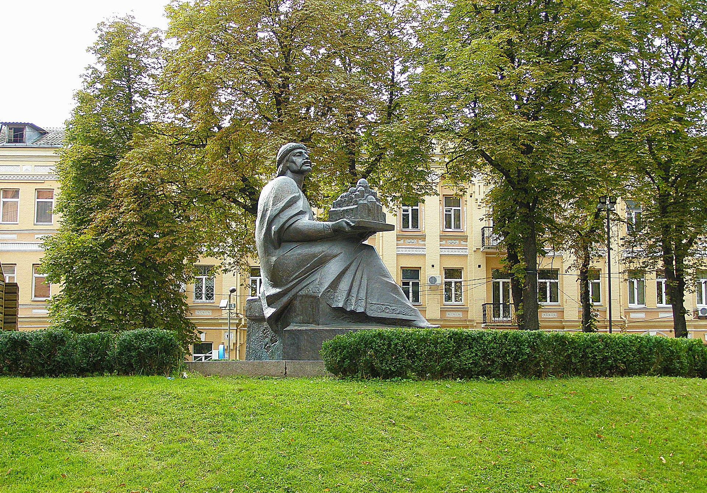

назад
Золотые ворота

История
При Ярославе Мудром территория Киева активно разрасталась, что требовало создания новых оборонительных укреплений. Были возведены мощные валы с армированными деревянными клетями и вырыты глубокие рвы. Новый окольный город, называемый историками городом Ярослава, окружали земляные валы общей протяжённостью 3,5 километра, проходили они по нынешним улицам центра Киева — от Львовской площади (где находились Львовские ворота) вдоль улицы Ярославов вал до Золотых ворот, спускались до площади Независимости (где стояли Лядские ворота) и снова поднимались вверх к Михайловской площади.
Своё название новый главный въезд в город получил от Золотых ворот Константинополя, выполнявших аналогичные функции. Строительство ворот вместе с Софийским собором упоминается в летописи под 1037 годом.  С киевскими Золотыми воротами связана древняя польская легенда, упоминаемая в "Хронике" Анонима Галла (нач. ХІІ в.), согласно которой щербина на коронационной регалии польских королей — мече Щербце — образовалась, когда король Болеслав Храбрый ударил по ним мечом, въезжая в Киев в 1018 году. Эта легенда, как обычно полагают, противоречит дате заложения Золотых ворот и оценке возраста самого меча[1]. Тем не менее, Н. Н. Никитенко выдвинула и обосновала гипотезу о более раннем заложении Золотых ворот с надвратной церковью Благовещения и оборонным земляным валом, возникшими одновременно с Софийским собором как части единого градостроительного комплекса, начатого Владимиром Великим и завершенного Ярославом Мудрым в 1011—1022 годах. По её версии, 1018 год является первым достоверным упоминанием киевских Золотых ворот в древнем источнике.
В 1970-е годы возле руин ворот был построен павильон, в котором располагался небольшой музей, посвящённый истории Золотых ворот, впоследствии музей перенесли в реконструируемое по сохранившимся рисункам здание самих Золотых ворот, где он и находится по сегодняшний день.В 1982 году, к празднованию 1500-летия Киева, по указу В. В. Щербицкого Золотые ворота были полностью реконструированы, несмотря на то, что не сохранилось достоверных изображений или планов того, как они выглядели в древности. Золотые ворота были воспроизведены в предполагаемом первоначальном виде. Работа проводилась в спешке, и сама конструкция имела ряд недостатков. Некачественный бетон и деревянные укрепления стали быстро разрушаться, и здание утратило первоначальный вид.
С киевскими Золотыми воротами связана древняя польская легенда, упоминаемая в "Хронике" Анонима Галла (нач. ХІІ в.), согласно которой щербина на коронационной регалии польских королей — мече Щербце — образовалась, когда король Болеслав Храбрый ударил по ним мечом, въезжая в Киев в 1018 году. Эта легенда, как обычно полагают, противоречит дате заложения Золотых ворот и оценке возраста самого меча[1]. Тем не менее, Н. Н. Никитенко выдвинула и обосновала гипотезу о более раннем заложении Золотых ворот с надвратной церковью Благовещения и оборонным земляным валом, возникшими одновременно с Софийским собором как части единого градостроительного комплекса, начатого Владимиром Великим и завершенного Ярославом Мудрым в 1011—1022 годах. По её версии, 1018 год является первым достоверным упоминанием киевских Золотых ворот в древнем источнике.
В 1970-е годы возле руин ворот был построен павильон, в котором располагался небольшой музей, посвящённый истории Золотых ворот, впоследствии музей перенесли в реконструируемое по сохранившимся рисункам здание самих Золотых ворот, где он и находится по сегодняшний день.В 1982 году, к празднованию 1500-летия Киева, по указу В. В. Щербицкого Золотые ворота были полностью реконструированы, несмотря на то, что не сохранилось достоверных изображений или планов того, как они выглядели в древности. Золотые ворота были воспроизведены в предполагаемом первоначальном виде. Работа проводилась в спешке, и сама конструкция имела ряд недостатков. Некачественный бетон и деревянные укрепления стали быстро разрушаться, и здание утратило первоначальный вид. В 1240 году ворота сильно пострадали во время осады и взятия города полчищами Батыя.Из записей путешественников XVI—XVII веков и рисунков Абрахама ван Вестерфельда (1651) известно, что уже к этому времени Золотые ворота были полуразрушенными. После 1654 года русская администрация, возводя на месте древних укреплений Старокиевскую крепость, предприняла несколько попыток починить ворота. До 1699 года на Золотых воротах находился древний образ Казанской Божией Матери, перенесённый потом в Троицкую церковь. В середине XVIII века Золотые ворота были признаны опасными для проезда и закопаны в вал. Новый въезд в Киев был вырыт рядом.
В 1743 г. сенат предписал: «З. ворота, для сохранения и вида древности, засыпать землей, как внутри, так и по сторонам и оставить в валу, а вместо них устроить другие, каменные»
— Золотые ворота в Киеве // Энциклопедический словарь Брокгауза и Ефрона : в 86 т. (82 т. и 4 доп.). — СПб., 1890—1907.
В 1832 году, накануне приезда Николая I в Киев, были проведены раскопки и киевляне снова увидели Золотые ворота, вернее — две сильно разрушенные параллельные стены. Николай I, увидевший ворота, распорядился сохранить исторический памятник. Стены были скреплены металлическими стяжками, укреплены подпорами, выровнены кирпичной кладкой и покрыты листами железа. Впрочем, узнать в этом сооружении когда-то величественные ворота оставалось крайне сложно.
В 2007 году была закончена очередная реконструкция, в ходе которой была проведена консервация и реставрация сохранившихся ещё со времен Ярослава Мудрого частей ворот, обновление внешнего вида и замена деревянной облицовки. В просторных интерьерах восстановленной достопримечательности посетитель может ознакомиться с экспозицией музея, рассказывающей об истории и архитектуре Золотых ворот, посмотреть древние стены проезда ХІ века, подняться по лестнице в церковь Благовещения, осмотреть сверху Киев.
В 1240 году ворота сильно пострадали во время осады и взятия города полчищами Батыя.Из записей путешественников XVI—XVII веков и рисунков Абрахама ван Вестерфельда (1651) известно, что уже к этому времени Золотые ворота были полуразрушенными. После 1654 года русская администрация, возводя на месте древних укреплений Старокиевскую крепость, предприняла несколько попыток починить ворота. До 1699 года на Золотых воротах находился древний образ Казанской Божией Матери, перенесённый потом в Троицкую церковь. В середине XVIII века Золотые ворота были признаны опасными для проезда и закопаны в вал. Новый въезд в Киев был вырыт рядом.
В 1743 г. сенат предписал: «З. ворота, для сохранения и вида древности, засыпать землей, как внутри, так и по сторонам и оставить в валу, а вместо них устроить другие, каменные»
— Золотые ворота в Киеве // Энциклопедический словарь Брокгауза и Ефрона : в 86 т. (82 т. и 4 доп.). — СПб., 1890—1907.
В 1832 году, накануне приезда Николая I в Киев, были проведены раскопки и киевляне снова увидели Золотые ворота, вернее — две сильно разрушенные параллельные стены. Николай I, увидевший ворота, распорядился сохранить исторический памятник. Стены были скреплены металлическими стяжками, укреплены подпорами, выровнены кирпичной кладкой и покрыты листами железа. Впрочем, узнать в этом сооружении когда-то величественные ворота оставалось крайне сложно.
В 2007 году была закончена очередная реконструкция, в ходе которой была проведена консервация и реставрация сохранившихся ещё со времен Ярослава Мудрого частей ворот, обновление внешнего вида и замена деревянной облицовки. В просторных интерьерах восстановленной достопримечательности посетитель может ознакомиться с экспозицией музея, рассказывающей об истории и архитектуре Золотых ворот, посмотреть древние стены проезда ХІ века, подняться по лестнице в церковь Благовещения, осмотреть сверху Киев.
Сквер у Золотых ворот
Чтобы облагородить такой ценный исторический памятник, как Золотые ворота, возле них в 19 веке был разбит сквер: насажены деревья, установлены скамейки. В 1899 году здесь состоялось грандиозное событие — был установлен чугунный фонтан, форма которого напоминала вазу для фруктов. Это был один из шести фонтанов, которые планировалось установить по всему городу. В течение нескольких лет, вплоть до 1902 года, в Киеве работала Садовая комиссия, которая уберегла от застройки несколько парков, садов и скверов. Среди прочих был и Золотоворотский сквер.
В 1997 году, у павильона со стороны улицы Лысенко, был открыт памятник Ярославу Мудрому, созданный по эскизу скульптора Ивана Кавалеридзе, в 1998 году — парковая бронзовая скульптура кота.
На сегодняшний день фонтан расположен в самом центре сквера, здесь собираются туристы, отдыхают киевляне, бегают дети. Часть сквера ближе к Владимирской занята летней площадкой кафе, обустроенной вокруг фонтана. Дорожки сквера, вымощенные брусчаткой, с лавочками, расположены ближе к улице Лысенко.
назад